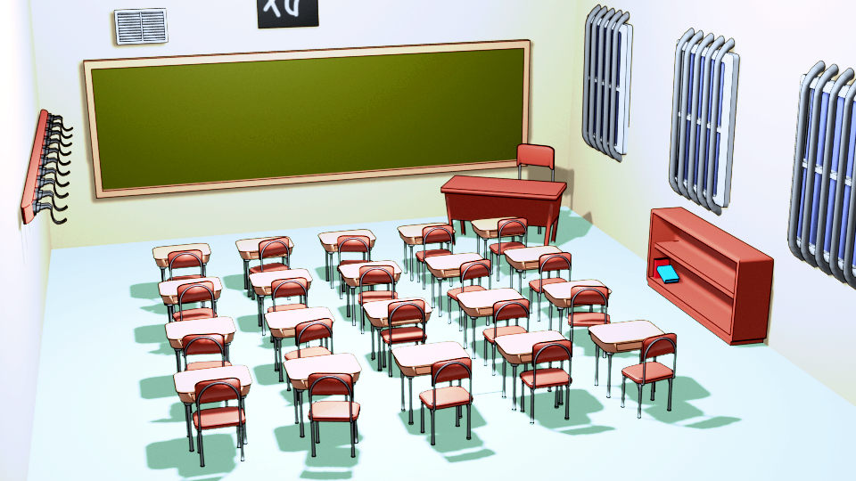

üëã Hi, I'm Joanna!
Currently a Master's student at MIT, studying Computer Science with a focus on Human-Computer Interaction. You can find me at gerr@mit.edu.
üìñ Work Experience
In order of most to least recent, I have worked at the following places:
- Treyarch as a Game Design Intern, designing gameplay and tools for testing
- Infinity Ward as a Tools Engineering Intern, adding telemetry for editor tools
- FableVision as a Junior Software Developer, refactoring an RPG framework
- Funkitron as a Design Intern, designing match-3 levels and storyboarding
- MIT Game Lab as a Level and UI Designer, prototyping an async VR game
üé® CATS
...aka, the Computer Artist's Tools Suite! This Python add-on tools menu for Blender allows digital artists to create and control non-photorealistic rendering styles without needing to edit shader graphs directly.
- Created a user-friendly UX/UI making use of existing digital art software conventions
- Procedurally generated shaders, with controls to tune final shader appearance

üëª Inspectre
A 2D puzzle-platformer (pw: uncle) made with Unity, in which a young lad must possess objects to traverse a trap-filled mansion.
- Managed project, wrote documentation, and ran standups to meet deadlines
- Designed and drew all characters, animations, environments, UI art
- Created modular sprite components that tiled together for easy level iteration

üìà Data Visualization
A few of the D3 visualizations I've worked on in recent years, including:
- PokeMonitor, which shows data about all the Pokemon spawns a trainer will encounter in their journey through the Kanto region
- Fandom Walk, a choice-driven, narrative viz that centers around the experience and reception of writing fanfiction within fandom

üçõ Hell's Kitchen
A 24-page multisequential (read: CYOA, Choose Your Own Adventure) comic, wherein a rookie chef tries to make curry for the first time. Read it here.

A visual novel made with Ren'Py about CHESS, the Consultants for Hectic Emergencies and Solid Solutions, and capturing the hearts (of other pieces).
Developed solo, meaning I did all art, code, writing, and music for this game.

üèóÔ∏è Structural Generation
This research investigated existing methods of generating cities, compared them against real-world structural and social concerns, and improved upon representations in ways that begin to account for the depth of urban life.
- Maya MEL scripting to procedurally generate buildings
- Developed C# algorithms in Unity to procedurally generate cities bounded by realistic urban constraints

üì± Line Stickers
I've published several animated sticker packs for the messaging app LINE, including:

üëæ Game Assets
I've made game assets for many projects across the past few years, including:
- Inspectre, a 2D toony puzzle-platformer
- All's Fair in Love and the Board, a 2D pixel-art visual novel
- Snakes on a Plane, a 2D pixel-art rhythm game
- DGS, a work in progress, coming 2022.
